1. Delete the Cat Spring
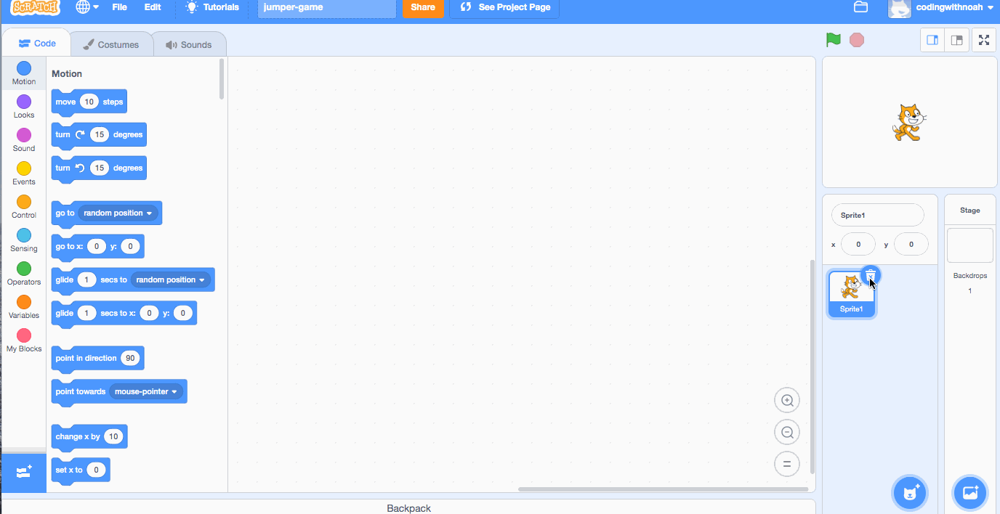2. Create the main background
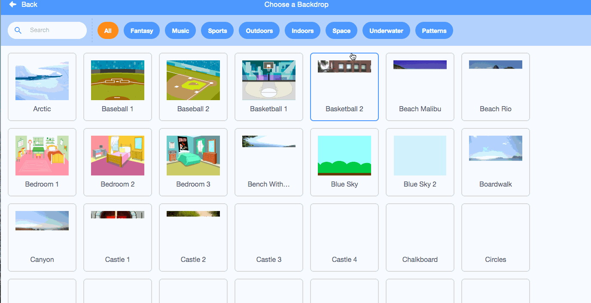3. Choose the dino sprite.
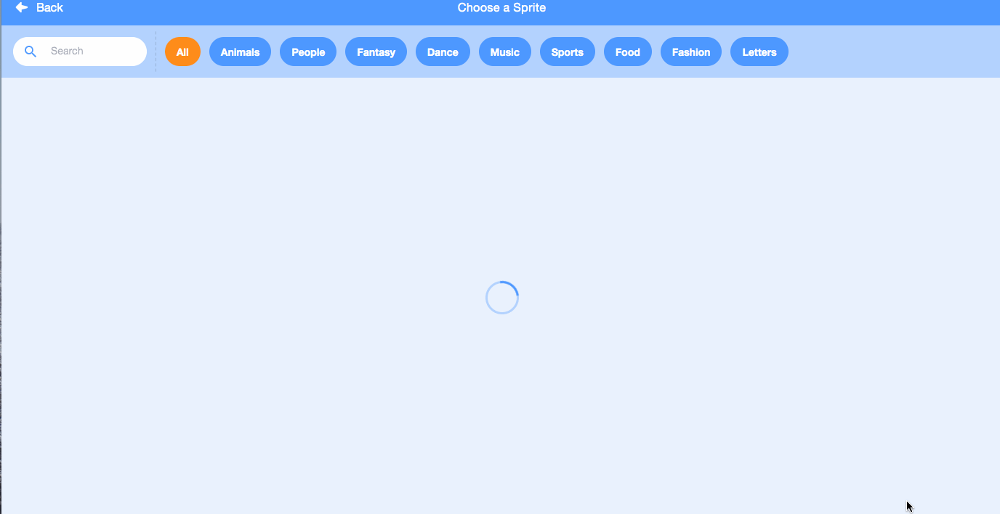4. Rename and flip the dino sprite.
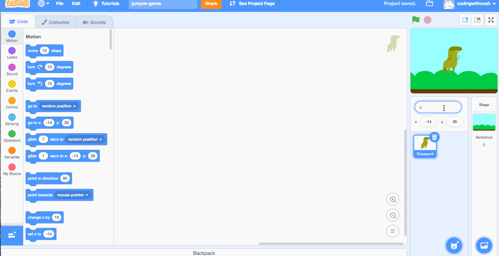5. Create the building sprite.
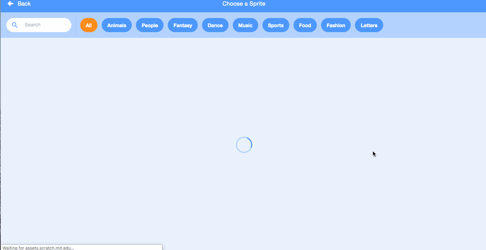6. Create the ground sprite.
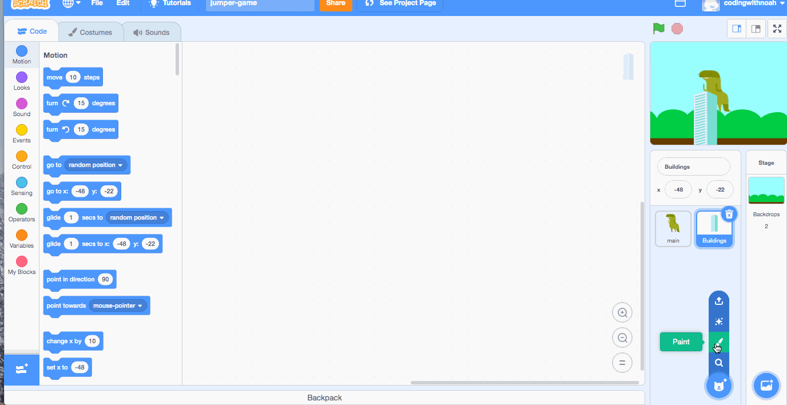7. Move the ground sprite.
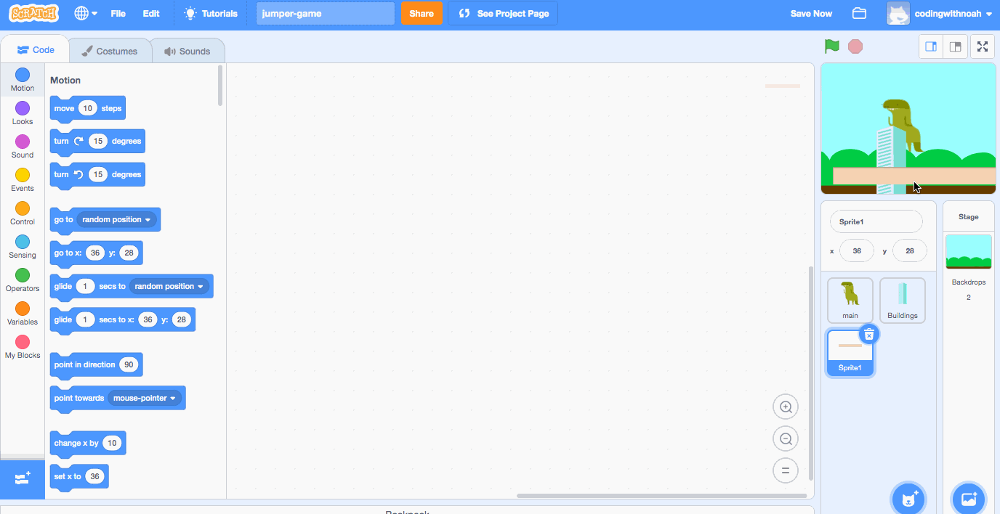8. Create clones of the building.
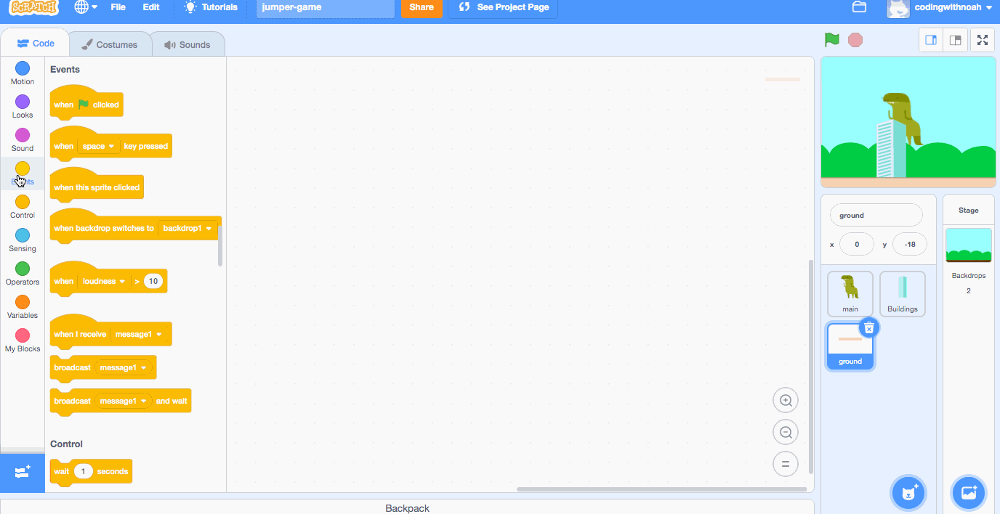9. Make the building move across the screen.
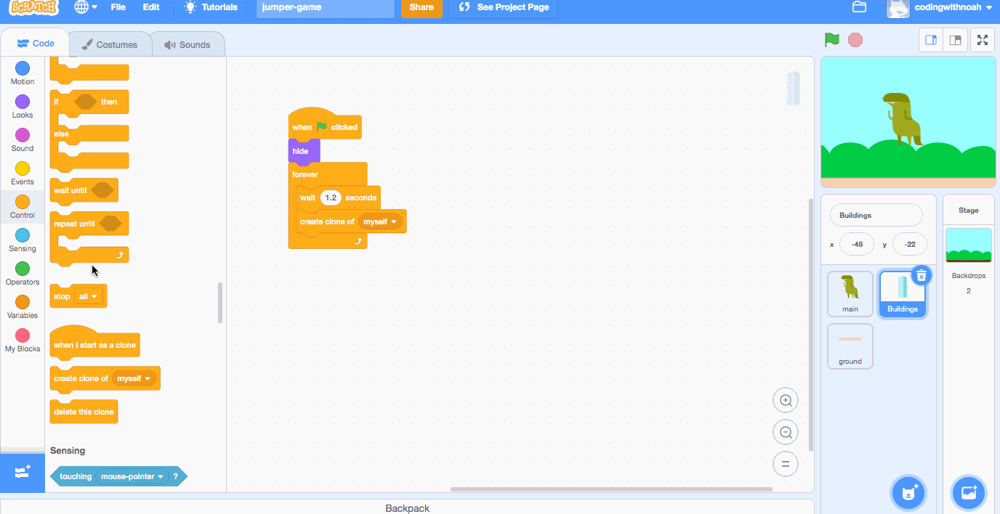10. Make the dinosaur jump.

11. Make the dinosaur move left and right.

12. Create the game over screen.
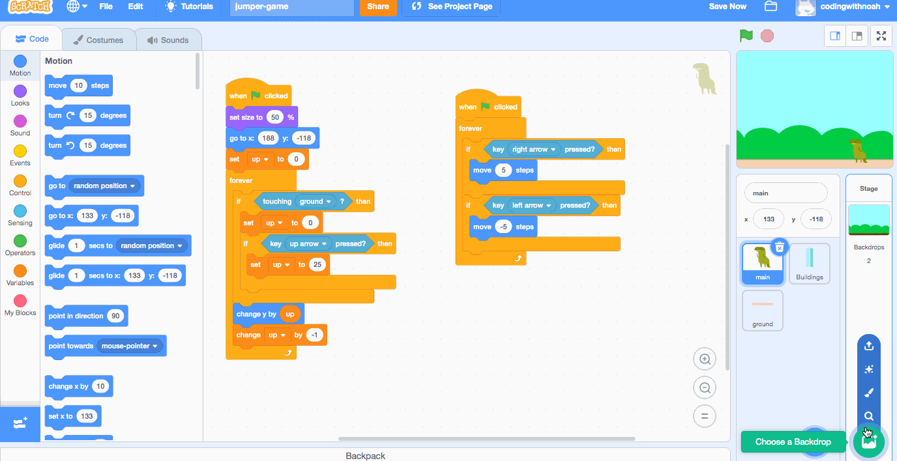13. Make it so the game end if the dinosaur touches the building.
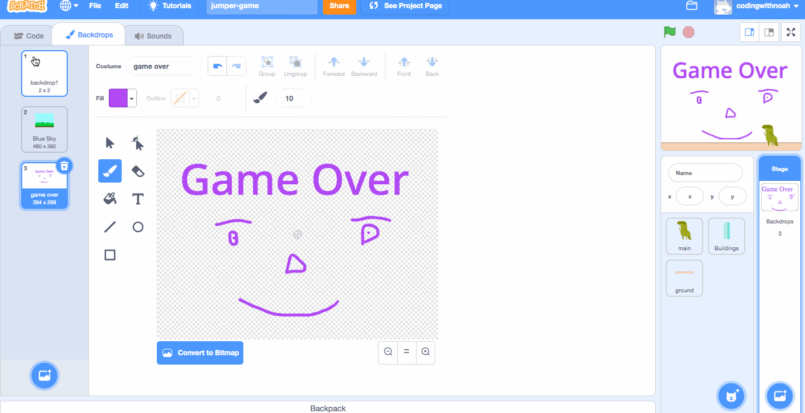